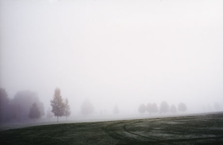

exhibition archive |
||
|  | ||
The Long Way Homeby Anna Moller Exhibition extended through Opening reception: Gallery hours: I’m finally compelled to ask you where you come from. image above: |
The Wild Project, is pleased to present The Long Way Home a series of photographs by Anna Moller that explore the lush countryside of Värmland, a historical province in Western Sweden. Moller spent her summers there as a child and has been photographing its surroundings for the past 5 years. Her landscapes, shrouded in a dense fog and dotted with the outline of trees, convey a sense of wonder at approaching a familiar place but seeing it afresh for the first time. Anna says of the area “If you walk the land you can feel swells of quiet, seas of forests and rivers made of glass. If you look closely you can see the stories of my family.” Anna Moller is a fine-art photographer based in New York City. Her work has been exhibited in New York, San Francisco, and in Europe. Moller works for Getty Images and has a myriad of editorial clients. The Wild Project, a new environmentally conscious venue for contemporary theater, film, and visual arts, is dedicated to supporting the arts by offering space and resources to emerging artists. The first gallery and theatre space in New York City to have a green roof with numerous varieties of plant species, wild project’s programming intends to cultivate a supportive artistic network, explore innovative and thoughtful approaches to art making and by doing so enrich the local community. For more information please contact Hilary Schaffner at 212. 228.1195 or info@thewildproject.com. |
|
exhibition archive |
|||
| 2016 | 2015 | 2014 | 2013 |
| 2011 | 2010 | 2009 | 2008 |